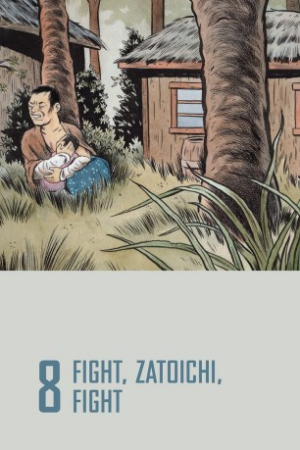
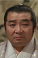

Also known as:座頭市血笑旅 (original title)
Country:Japan, 87 minutes
Spoken languages:Japanese
Genres:Adventure, Action, Drama
Director(s):Kenji Misumi
Writer(s):Seiji Hoshikawa, Tetsurō Yoshida, Masaatsu Matusmura
Video Codec:Unknown
Number: 2825


Certification:
Storyline:
Blind swordsman/masseuse Zatoichi befriends a young woman returning home with her baby. When gangsters mistake her for Zatoichi and kill her, Zatoichi determines to escort the baby to its father. He gains the reluctant help of a young pick pocket and together they travel to find the baby's father. But they do not reckon on the father's reaction to their arrival, nor on their own growing feelings for the child.
Cast: 

Medium: Bluray,
Comments: Part of: Zatoichi - The Blind Swordsman collection
Loaned: No
Aspect ratio: Unknown